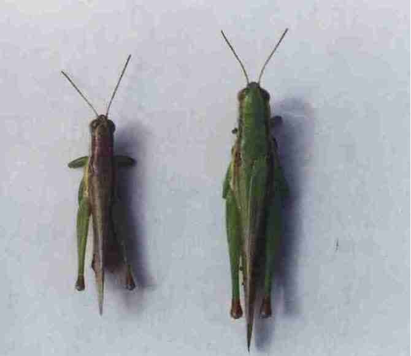

害虫名称：中华稻蝗
分类地位：直翅目丝角蝗科
分布范围：分布广泛
为害特点：以成虫和若虫取食稻叶，抽穗后还取食稻叶，抽穗后还取食咬伤穗颈、谷粒等，形成白穗、秕谷和缺粒。
形态特征：成虫体长30－44毫米，雌大雄小，黄绿色或黄褐色，复眼灰色，触角褐色丝状，头部两侧复眼后方各有深褐纵纹1条，直达前胸背板后缘。卵长约4毫米，长圆筒形，深黄色，由30多粒斜排成卵块，卵块处包有坚韧胶质物的卵囊。若虫形似成虫，共6龄，称蝗蝻。 中华稻蝗
发病规律： l年发生1代，以卵在田埂或稻田附近荒地的土中越冬。次年5月中、下旬孵化。若虫孵化后常先集中在田边稻株和杂草上取食，3龄后渐向田中间迁移为害。7－8月见成虫。9－10月份产卵。
防治方法：1．农业措施 冬季铲除田埂、沟渠边的草皮，消灭越冬虫源。结合春耕灌水，打捞上浮带卵块的杂物销毁。 2．药剂防治 若虫（蝗蛹）未扩散前多集中在田埂、沟渠边的杂草上，要及时用药。可选用4O％乐果乳油每666．7平方米用50毫升，或20%杀灭菊酯乳油25毫升加水50－60千克喷雾。或用4％乙敌粉，或4％敌马粉2千克加细沙土20－25千克拌匀撒施。